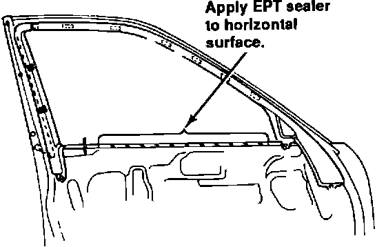

Door Panel - Creaks When Used as an Armrest
Door Creaks WhenUsed as Armrest

If a door panel on a '91-92 Legend creaks when you rest your arm on it, the door panel may be rubbing on the inner door skin. To eliminate the noise, remove the door panel and apply a strip of 5 mm EPT sealer along the horizontal area at the top of the door. Run the EPT from just in front of the lock knob all the way up to the mirror mounting area.
Before you reinstall the door panel, flip it over and tighten the screws that hold the upper and lower portions together.